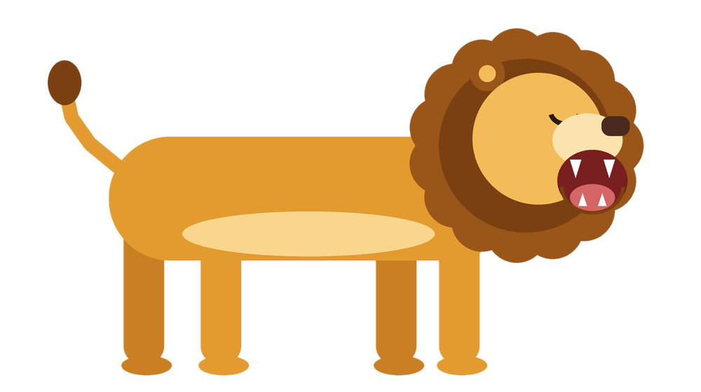

Visual singa memakai dua gambar PNG, pose berjalan dan pose mengaum. Kedua gambar digambar sendiri oleh program Python (Pillow) di atas background putih, lalu background putihnya dihapus (metode flood-fill dari tepi gambar) sehingga menjadi transparan. Khusus pose berjalan, gambar dipotong lagi menjadi badan dan 4 kaki terpisah, sama seperti boneka animasi 2D, supaya kakinya bisa digerakkan satu per satu.
Auman khas singa diputar lewat HTML5 Audio dari rekaman auman singa asli: “AUUUMMM... RAWR!” Suara dianalisis memakai Web Audio API sehingga gelombang suara di mulut, equalizer di pojok panggung, denyut cahaya matahari terbenam, dan getaran layar ikut bergerak sesuai kerasnya suara.
Animasi CSS + JavaScript: berjalan dengan teknik walk cycle (setiap kaki diputar bergantian pada poros pangkalnya dengan pola trot, yaitu kaki diagonal bergerak sefase), badan naik-turun mengikuti langkah, pohon akasia dan tanah bergeser (efek parallax), kunang-kunang beterbangan di hutan petang, bintang mulai berkelip, dan saat mengaum singa berganti pose, kepalanya mendongak dengan mulut terbuka lebar.
Animasi yang sama juga dibuat sebagai video MP4 dengan program Python (Pillow, NumPy, SciPy, dan FFmpeg): 420 frame dirender satu per satu lalu digabung dengan suara aumannya.
pip install pillow numpy scipy
python buat_singa_bergerak.py